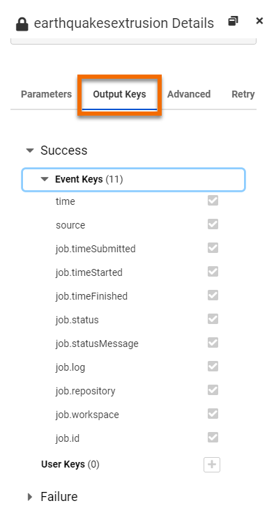
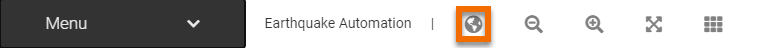

After completing this lesson, you’ll be able to:
Workspaces and other Internal Actions are the only protocols that have both input and output ports. This means that although they are treated as an Action because they need something to kick them off, they can also act as a Trigger to downstream Actions.
Workspaces can send messages containing content from the data being processed and report the status of a translation, such as whether it ran successfully or ended in failure.
By default, workspace nodes have two outports representing the workspace status: one for Success and one for Failure. These ports allow you to build an action in response to one or both job statuses. Each output includes a set of output keys with additional information about the workspace that was run that can be used by Actions connected to either port.
The Automations Writer can be used to add additional custom output ports to a Workspace Action simply by adding the writer into the workspace to be run. This will allow for setting up Actions to be triggered based on what happens within the workspace. The Automations Writer also allows for passing custom messages from within the workspace to Actions connected to any of the output ports.
Therefore, messages can be passed downstream via Success, Failure, or custom ports.
Instead of having a workspace trigger additional Actions on job completion, you can use some transformers to trigger events, including:
There are two advantages to using transformers this way instead of using Automation Actions:
The disadvantage is that you won't know whether the workspace completed successfully - or not - when the event is triggered.
Messages pass along the components of Automations workflows, from Triggers to Actions to External actions, in the form of JSON-formatted key-value pairs. These key-value pairs represent various properties that are derived from the components of the workflow and form the content of the message. Each key that is output by a component can be sent downstream to the next component, and ultimately output by the workflow to a receiving application.
You can work with the output keys of workflow messages in the following ways:
As you build an Automation, you can control the keys that are sent to downstream components, and that are ultimately included in the final message output. In the Details pane of a Trigger, Action, or External Action, select the Output Keys tab. Here, you can:

The primary benefit of disabling keys or creating user keys is to prevent them from being overwritten, where desired. The values of JSON objects with the same key strings are overwritten as they pass through a workflow. For example, consider a workflow that contains two Run Workspace Actions in sequence. Both Actions pass a job.timeStarted key, but the value that key produces in the first action is overwritten by the second Action. If you want to preserve only the job.timeStarted value of the first workspace, you can disable the job.timeStarted key in the configuration of the second Action, and preserve it in the first.
But what if you wanted to preserve both job.timeStarted values? In this case, you can create a user key in both workspaces, give them each unique names, and base their values on job.timeStarted. Optionally, you can also disable job.timeStarted in both workspaces.
You can use user keys anywhere in a workflow that allows you to specify a key for a parameter value.
You can create your own key-value pairs, prefixed with the global. tag. Global keys allow you to reference a value in multiple components of a workflow without having to explicitly define it each time. You can use global keys anywhere in a workflow that allows you to specify an output key for a parameter value.
You can create global keys in two ways.
On the Automations toolbar, click the Global Keys Editor button:

Dynamically, when specifying a parameter value in a workflow. From an applicable parameter drop-down list, select Add to Global Keys.

In the Global Keys Editor, click + to start a new Global Key, enter a name (global.<your_name>), specify a Value, and click OK.

You can use the Filter Messages Action to test for the presence of a string in an output key, and route messages in your workflow accordingly. For example, if the email.subject key from an Email Received (SMTP) trigger contains a specific string, you might choose to route the message differently from other emails that do not contain that string.